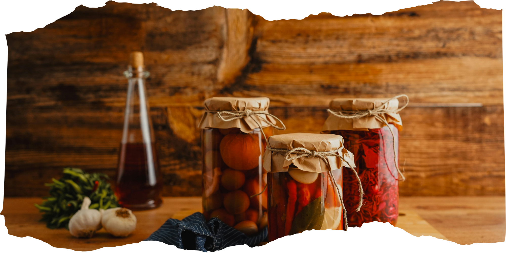
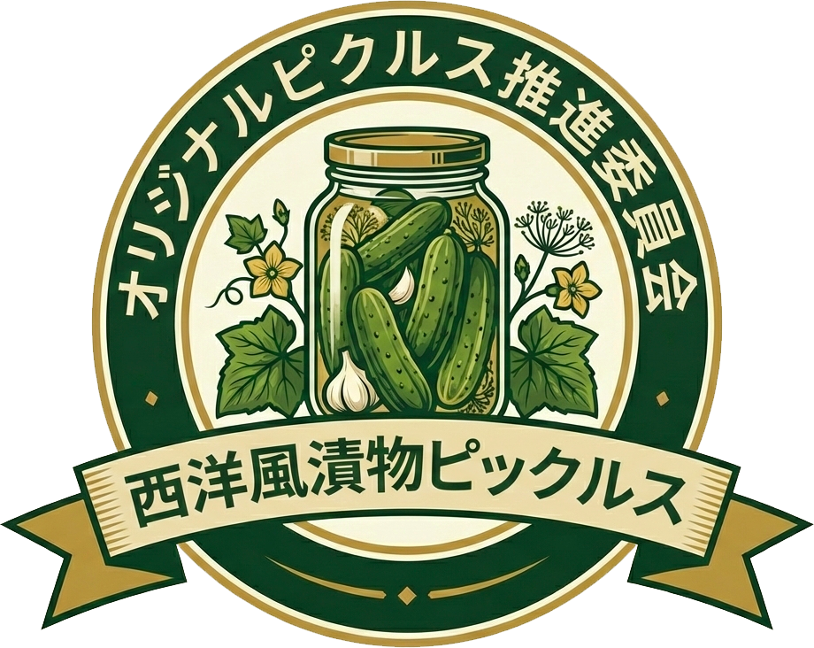
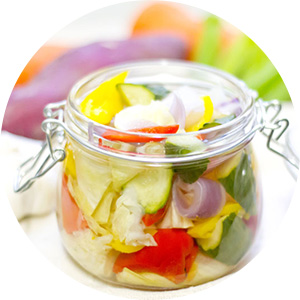
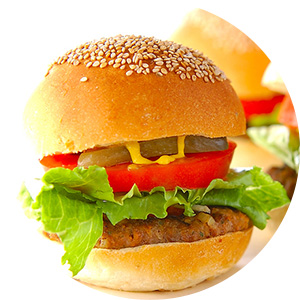
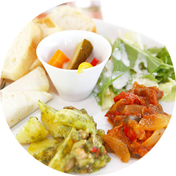
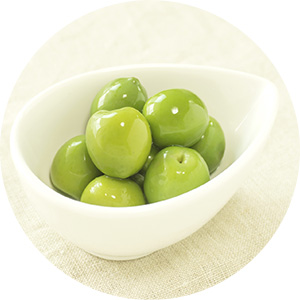
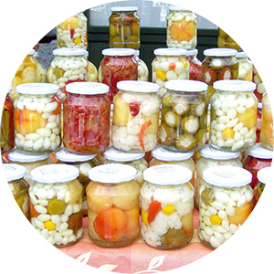
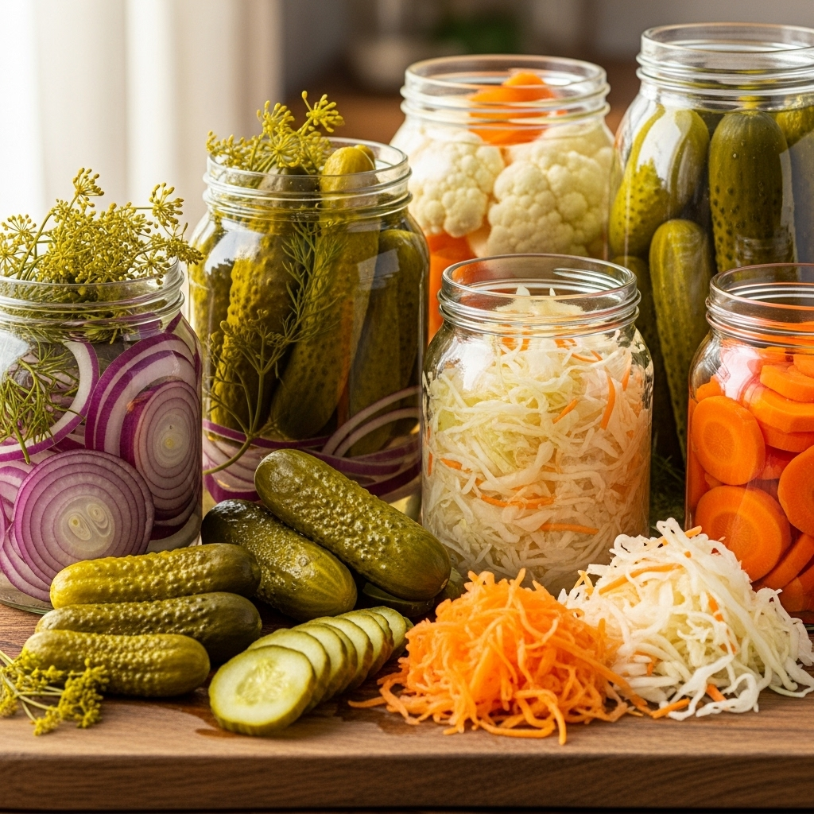

西洋風漬物ピックルス




お酢の効果で良く耳にするのがこの「疲労回復」効果ではないでしょうか？
普段生活をしていると体には自然に乳酸やピルビン酸などの疲労物質が蓄されていきます。
これらの疲労物質をピクルスの主成分である酢酸が分解してくれるのです。
ピクルスを一口食べると心地よい酸味と甘みが口一杯に広がっていきます。
その酸味が味覚や嗅覚を刺激して、食欲をコントロールしている脳の摂食中枢に働きかけて食欲が
わいてくるという仕組みです。
ピクルスには体重を正常に保つようコントロールしてくれる効果があるのですが、これは体内の 老廃物や有毒物質を取り除いてくれたり、アミノ酸が新陳代謝を高め体内に取り込んだ栄養分を 消費するように働きかけるからです。 そして、脂肪分解の役割を持つ酵素リパーゼを活性化させ、悪玉コレステロールを分解、さらに 余分な栄養分を分解して蓄積されるのを防ぐ働きを持っています。

無印良品の「ソーダガラス密封ビン」は入手が容易でおすすめです。
しっかりと密閉できる厚手のガラスビンは、サイズが豊富で機能的です。